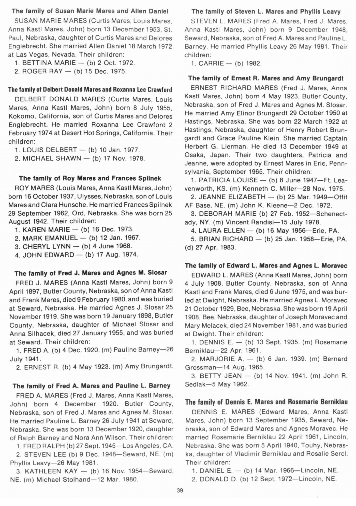

The book · The Family of John Kastl
Page 39 The family of Susan Marie Mares and Allen Daniel


Transcription
The family of Susan Marie Mares and Allen Daniel
SUSAN MARIE MARES (Curtis Mares, Louis Mares, Anna Kastl Mares, John) born 13 December 1953, St. Paul, Nebraska, daughter of Curtis Mares and Delores Englebrecht. She married Allen Daniel 18 March 1972 at Las Vegas, Nevada. Their children:
- BETTINA MARIE — (b) 2 Oct. 1972.
- ROGER RAY — (b) 15 Dec. 1975.
The family of Delbert Donald Mares and Roxanna Lee Crawford
DELBERT DONALD MARES (Curtis Mares, Louis Mares, Anna Kastl Mares, John) born 8 July 1955, Kokomo, California, son of Curtis Mares and Delores Englebrecht. He married Roxanna Lee Crawford 2 February 1974 at Desert Hot Springs, California. Their children:
- LOUIS DELBERT — (b) 10 Jan. 1977.
- MICHAEL SHAWN — (b) 17 Nov. 1978.
The family of Roy Mares and Frances Spilnek
ROY MARES (Louis Mares, Anna Kastl Mares, John) born 16 October 1937, Ulysses, Nebraska, son of Louis Mares and Clara Hunsche. He married Frances Spilnek 29 September 1962, Ord, Nebraska. She was born 25 August 1942. Their children:
- KAREN MARIE — (b) 16 Dec. 1973.
- MARK EMANUEL — (b) 12 Jan. 1967.
- CHERYL LYNN — (b) 4 June 1968.
- JOHN EDWARD — (b) 17 Aug. 1974.
The family of Fred J. Mares and Agnes M. Slosar
FRED J. MARES (Anna Kastl Mares, John) born 9 April 1897, Butler County, Nebraska, son of Anna Kastl and Frank Mares, died 9 February 1980, and was buried at Seward, Nebraska. He married Agnes J. Slosar 25 November 1919. She was born 19 January 1898, Butler County, Nebraska, daughter of Michael Slosar and Anna Silhacek, died 27 January 1955, and was buried at Seward. Their children:
- FRED A. (b) 4 Dec. 1920. (m) Pauline Barney—26 July 1941.
- ERNEST R. (b) 4 May 1923. (m) Amy Brungardt.
The family of Fred A. Mares and Pauline L. Barney
FRED A. MARES (Fred J. Mares, Anna Kastl Mares, John) born 4 December 1920. Butler County, Nebraska, son of Fred J. Mares and Agnes M. Slosar. He married Pauline L. Barney 26 July 1941 at Seward, Nebraska. She was born 13 December 1920, daughter of Ralph Barney and Nora Ann Wilson. Their children:
- FRED RALPH (b) 27 Sept. 1945—Los Angeles, CA.
- STEVEN LEE (b) 9 Dec. 1948—Seward, NE. (m) Phyllis Leavy—26 May 1981.
- KATHLEEN KAY — (b) 16 Nov. 1954—Seward, NE. (m) Michael Stolhand—12 Mar. 1980.
The family of Steven L. Mares and Phyllis Leavy
STEVEN L. MARES (Fred A. Mares, Fred J. Mares, Anna Kastl Mares, John) born 9 December 1948, Seward, Nebraska, son of Fred A. Mares and Pauline L. Barney. He married Phyllis Leavy 26 May 1981. Their children:
- CARRIE — (b) 1982.
The family of Ernest R. Mares and Amy Brungardt
ERNEST RICHARD MARES (Fred J. Mares, Anna Kastl Mares, John) born 4 May 1923, Butler County, Nebraska, son of Fred J. Mares and Agnes M. Slosar. He married Amy Elinor Brungardt 29 October 1950 at Hastings, Nebraska. She was born 22 March 1922 at Hastings, Nebraska, daughter of Henry Robert Brungardt and Grace Pauline Klein. She married Captain Herbert G. Lierman. He died 13 December 1949 at Osaka, Japan. Their two daughters, Patricia and Jeanne, were adopted by Ernest Mares in Erie, Pennsylvania, September 1965. Their children:
- PATRICIA LOUISE — (b) 8 June 1947—Ft. Leavenworth, KS. (m) Kenneth C. Miller—28 Nov. 1975.
- JEANNE ELIZABETH — (b) 25 Mar. 1949—Offit AF Base, NE. (m) John K. Kleene—2 Dec. 1972.
- DEBORAH MARIE (b) 27 Feb. 1952—Schenectady, NY. (m) Vincent Randisi—15 July 1978.
- LAURA ELLEN — (b) 16 May 1956—Erie, PA.
- BRIAN RICHARD — (b) 25 Jan. 1958—Erie, PA. (d) 27 Apr. 1983.
The family of Edward L. Mares and Agnes L. Moravec
EDWARD L. MARES (Anna Kastl Mares, John) born 4 July 1908, Butler County, Nebraska, son of Anna Kastl and Frank Mares, died 6 June 1975, and was buried at Dwight, Nebraska. He married Agnes L. Moravec 21 October 1929, Bee, Nebraska. She was born 19 April 1908, Bee, Nebraska, daughter of Joseph Moravec and Mary Melacek, died 24 November 1981, and was buried at Dwight. Their children:
- DENNIS E. — (b) 13 Sept. 1935. (m) Rosemarie Berniklau—22 Apr. 1961.
- MARJORIE A. — (b) 6 Jan. 1939. (m) Bernard Grossman—14 Aug. 1965.
- BETTY JEAN — (b) 14 Nov. 1941. (m) John R. Sedlak—5 May 1962.
The family of Dennis E. Mares and Rosemarie Berniklau
DENNIS E. MARES (Edward Mares, Anna Kastl Mares, John) born 13 September 1935, Seward, Nebraska, son of Edward Mares and Agnes Moravec. He married Rosemarie Berniklau 22 April 1961, Lincoln, Nebraska. She was born 5 April 1940, Touhy, Nebraska, daughter of Vladimir Berniklau and Rosalie Sercl. Their children:
- DANIEL E. — (b) 14 Mar. 1966—Lincoln, NE.
- DONALD D. (b) 12 Sept. 1972—Lincoln, NE.
People from the line of descent on this page
- Fred John Mares 1897–1980
- Edward Lucas Mares 1908–1975
- Roy Mares b. 1937
- Susan Marie Mares b. 1953
- Delbert Donald Mares b. 1955
- Bettina Marie Daniel b. 1972
- Roger Ray Daniel b. 1975
- Louis Delbert Mares b. 1977
- Michael Shawn Mares b. 1978
- Frances Spilnek b. 1942
- Karen Marie Mares b. 1973
- Mark Emanuel Mares b. 1967
- Cheryl Lynn Mares b. 1968
- John Edward Mares b. 1974
- Agnes M. Slosar 1898–1955
- Fred A. Mares b. 1920
- Ernest Richard Mares b. 1923
- Pauline L. Barney b. 1920
- Fred Ralph Mares b. 1945
- Steven Lee Mares b. 1948
- Kathleen Kay Mares b. 1954
- Carrie Mares b. 1982
- Amy Elinor Brungardt b. 1922
- Patricia Louise Mares b. 1947
- Jeanne Elizabeth Mares b. 1949
- Deborah Marie Mares b. 1952
- Laura Ellen Mares b. 1956
- Brian Richard Mares 1958–1983
- Agnes L. Moravec 1908–1981
- Dennis E. Mares b. 1935
- Marjorie A. Mares b. 1939
- Betty Jean Mares b. 1941
- Rosemarie Berniklau b. 1940
- Daniel E. Mares b. 1966
- Donald D. Mares b. 1972
Transcriber’s notes
Clean two-column page. In 'DONALD D. (b) 12 Sept. 1972' the final digit 2 carries a small extra stroke/mark (possibly a print blemish or correction), still reads 1972. 'born 4 December 1920. Butler County' has a period after 1920 as printed.